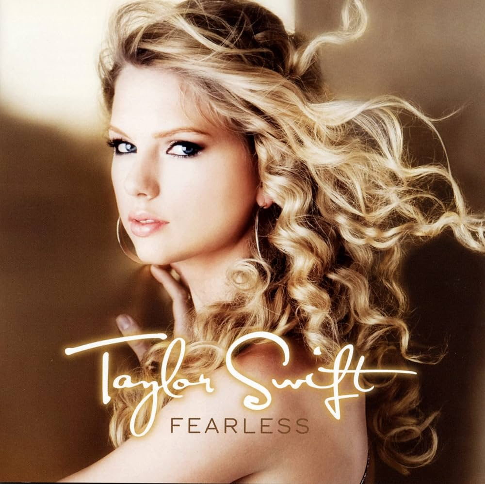

Fearless (2008)
- You Belong With Me:

Informações Gerais
- Artista: Taylor Swift
- Data de Lançamento: 11 de novembro de 2008
- Gênero: Country e Pop
- Gravadora: Big Machine Records
- Produtor: Nathan Chapman, Scott Borchetta
Faixas Notáveis
- "Fearless" - Faixa-título que expressa confiança e coragem.
- "Love Story" - Um dos maiores sucessos do álbum, uma releitura moderna da história de Romeu e Julieta, conhecida por sua melodia cativante e narrativa romântica.
- "You Belong with Me" – Um hit que fala sobre o desejo de estar com alguém que está em um relacionamento com outra pessoa, destacando as emoções de um amor não correspondido.
- "Fifteen" – Reflete sobre as experiências e emoções da adolescência, capturando a essência do primeiro amor e a descoberta pessoal.
- "White Horse" – Uma balada sobre a desilusão amorosa e a realização de que o amor idealizado pode não se concretizar.
Legado
- "Fearless" é frequentemente citado como um álbum que marcou uma mudança significativa na música pop e country, destacando a habilidade de Swift como compositora e intérprete. O álbum é um exemplo de como uma combinação de uma narrativa poderosa e uma produção musical inovadora pode ressoar amplamente e deixar uma marca duradoura na indústria da música.